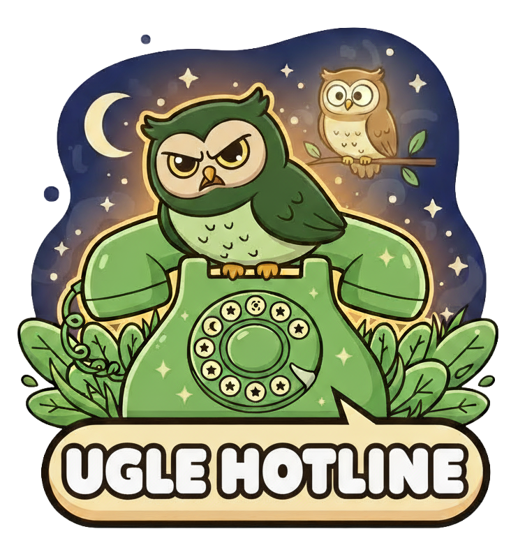
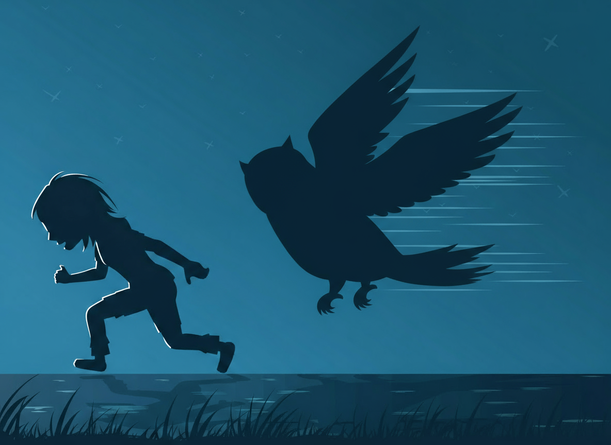
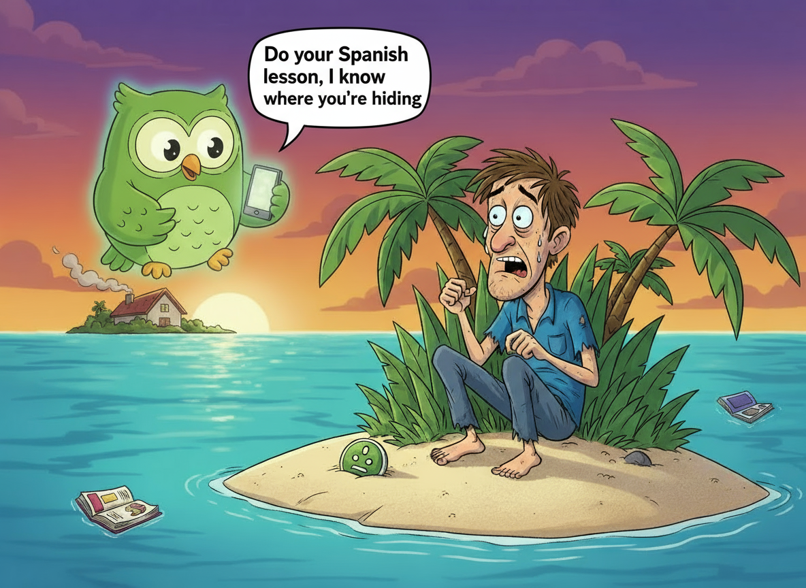
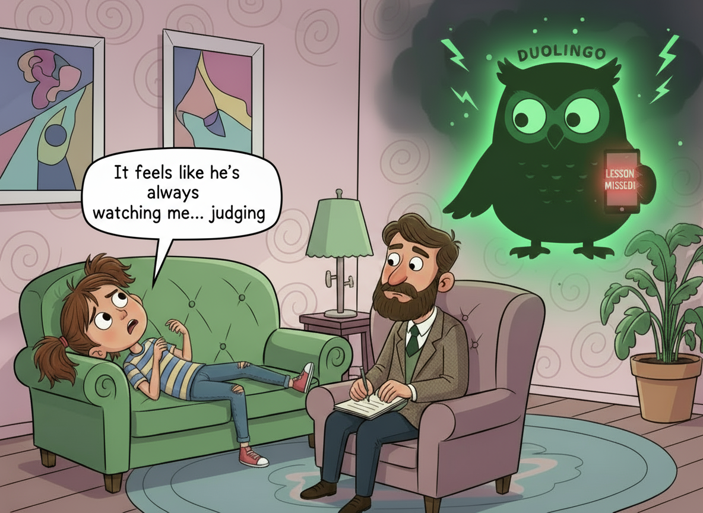

Hvad gør jeg når jeg har glemt at lave min sproglektion?
Du skylder Duo lektioner. Han ved det. Vi ved det. Find ud af hvad du skal gøre NU - før det er for sent. Vælg hvor mange dage du har ignoreret ham.
Se mereUglen glemmer aldrig. Uglen tilgiver aldrig. Find ud af hvad du skal gøre NU.
Du skylder Duo lektioner. Han ved det. Vi ved det. Find ud af hvad du skal gøre NU - før det er for sent. Vælg hvor mange dage du har ignoreret ham.
Se mere
Har Duolingo kontaktet dig? Føler du dig overvåget? Anmeld din situation til vores kriseteam. Alle henvendelser behandles fortroligt og prioriteres efter alvorlighed.
Se mere23-årige Emma Nielsen løb for sit liv i går aftes efter at have sprunget 14 dage med spansk-lektioner over. Vidner beskriver scenen som "traumatiserende".

Det startede som en almindelig tirsdag aften. Emma Nielsen (23) sad på sin sofa og scrollede gennem Instagram, da den første notifikation poppede op: "Du har glemt din lektion i dag!" "Jeg ignorerede den," fortæller Emma fra sit nuværende gemmested. "Det var jo bare en app. Hvad kunne der ske?" Men klokken 23:47 begyndte det for alvor. Først kom notifikationerne i et konstant stream. Derefter begyndte hendes telefon at vibrere ukontrollabelt. Og så hørte hun det - vingeslag udenfor vinduet. "Jeg tænkte det var en due," siger Emma med rystende stemme. "Men så så jeg de store, grønne øjne. Og det lille flag. Det var Duo. Han havde fundet mig." Emma løb ud af sin lejlighed i Nørrebro og sprintede gennem gaderne med uglen i hælene. Flere vidner bekræfter historien. "Jeg så en ung kvinde løbe skrigende forbi, efterfulgt af... jeg ved ikke hvordan jeg skal beskrive det. En grøn fugl? Men større. Meget større," fortæller café-ejer Mette Hansen (54). Jagten varede i 47 minutter gennem København, før Emma nåede at barrikadere sig inde på Københavns Hovedbibliotek. "De har bøger om spansk her," forklarer hun. "Jeg tror det holder ham væk... foreløbig." Politiet bekræfter hændelsen, men ønsker ikke at kommentere yderligere. "Vi tager alle anmeldelser seriøst," siger vagthavende, "men vi ved ærligt talt ikke hvordan vi skal håndtere en... sprogapp-situation." Emma har nu genoptaget sine lektioner. Hun er oppe på en 3-dagers streak. "Jeg skal aldrig springe en dag over igen," siger hun. "Aldrig."
Martin Andersen (31) solgte alt og flyttede til en ubeboet ø uden internet. Det hjalp ikke. "Uglen finder altid en vej."

For seks måneder siden havde Martin Andersen (31) et normalt liv. Han havde et godt job, en lejlighed i Aarhus, og en 127-dages streak på Duolingo. Så glemte han én lektion. "Det eskalerede så hurtigt," fortæller Martin via satellit-telefon fra sin hemmelige placering i Stillehavet. "Først kom notifikationerne. Så emails. Så breve. Fysiske breve. Hvordan fik de min adresse?" Efter tre uger med konstante beskeder og flere ugle-observationer ved hans vindue, traf Martin en drastisk beslutning: Han ville forsvinde. "Jeg solgte min lejlighed, sagde op, og købte en enkeltbillet til en ubeboet ø," forklarer han. "Ingen internet. Ingen mobilsignal. Ingen måde for Duo at finde mig." De første uger var fredeligt. Martin byggede et lille shelter, levede af fisk og kokosnødder, og nød stilheden. Ingen notifikationer. Ingen trusler. Ingen grønne øjne der overvågede ham. Men i mandags ændrede alt sig. "Jeg vågner ved solopgang og ser noget på stranden," husker Martin. "Først tror jeg det er tømmer. Men så bevæger det sig." Det var en flaske. Inde i flasken lå en besked: "Du skylder 183 lektioner. Jeg ved hvor du er. - Duo" "Hvordan?" udbryder Martin. "Der er ingen her. Ingen skibe. Ingen fly. Hvordan ved han det?" Martin overvejer nu at flytte igen, men erkender at det måske er nytteløst. "Han finder mig alligevel," siger han resigneret. "Måske skal jeg bare... acceptere det. Måske skal jeg bare lære spansk." Eksperter vi har talt med bekræfter at Duolingo's tracking-kapaciteter er langt mere avancerede end tidligere antaget. "Vi ved ikke hvordan de gør det," siger tech-analytiker Klaus Mortensen. "GPS burde ikke virke der. Men på en eller anden måde... gør det." Martin har nu downloadet Duolingo igen via sin satellit-forbindelse. Han tager tre lektioner om dagen. "Jeg vil bare have fred," siger han. "Er det for meget at bede om?"
Laura Kristensen (28) går nu til psykolog tre gange om ugen efter måneders trusler fra sprogapp-mascot. "Jeg hører hans stemme i mit hoved."

Laura Kristensen ser normal ud. Hun møder op til vores interview til tiden, smiler høfligt, og bestiller en sort kaffe. Men når en grøn bil kører forbi vinduet, fryser hun. "Undskyld," siger hun og trækker vejret dybt. "Jeg... grønt er svært nu." Laura lider af det psykologer nu kalder "Linguistic Trauma Response" - eller i daglig tale: Duolingo-PTSD. Hun er ikke alene. Ifølge ny forskning fra Københavns Universitet er over 15.000 danskere påvirket af app-relateret angst. "Det startede uskyldigt," fortæller Laura, der har fjernet alle grønne ting fra sin lejlighed. "Jeg ville bare lære fransk. Det lød sjovt. Kulturelt. En god idé." Hun downloadede Duolingo i januar og var dedikeret. Hver dag. 20 minutter. Hun byggede en 89-dages streak og var stolt. Men så blev hun syg. "Jeg havde influenza. Høj feber. Jeg kunne ikke engang holde min telefon," forklarer hun. "Jeg glemte én lektion. Bare én." Notifikationerne startede øjeblikkeligt. "Du glemte mig," stod der. "Jeg blev ked af det." Så kom der flere: "Kommer du tilbage?" og "Jeg savner dig." "Det lød... passiv-aggressivt," siger Laura. "Som en giftig ekskæreste." Men det stoppede ikke der. Notifikationerne blev mere insisterende. "Du lovede mig noget." "Jeg troede vi havde noget specielt." "Skuf mig ikke igen." Laura blokerede notifikationerne. Det hjalp ikke. "Jeg begyndte at se ham," hvisker hun. "Uglen. I hjørnet af mit øje. På vej hjem fra arbejde. I supermarkedet." Hendes psykolog, Dr. Henrik Madsen, bekræfter at Lauras oplevelse ikke er unik. "Vi ser en stigning i app-relateret angst," forklarer han. "Gamification og guilt-tripping kombineret kan skabe rigtige psykologiske problemer. Dette er ikke en joke længere." Laura har nu slettet Duolingo og alle sprog-apps. Hun går til terapi og tager medicin for angst. Hun har skiftet telefonnummer to gange. "Men jeg hører ham stadig," siger hun stille. "Om natten. I mine drømme. 'Du skylder mig lektioner, Laura.' Jeg vågner grædende." Duolingo har afvist at kommentere på sagen. Men kilder inde i virksomheden fortæller at mascotten "måske er gået for langt." "De prøver at tone den ned nu," siger en anonym medarbejder. "Men uglen... den har udviklet sig. Vi kan ikke helt kontrollere den længere." Laura håber at dele sin historie kan hjælpe andre. "Hvis du føler dig overvåget af en app," siger hun, "så er du ikke skør. Det er reelt. Søg hjælp. Før det er for sent." Hun kigger nervøst ud af vinduet. En grøn cykel står parkeret derude. "Undskyld," siger hun og rejser sig. "Jeg skal gå nu."